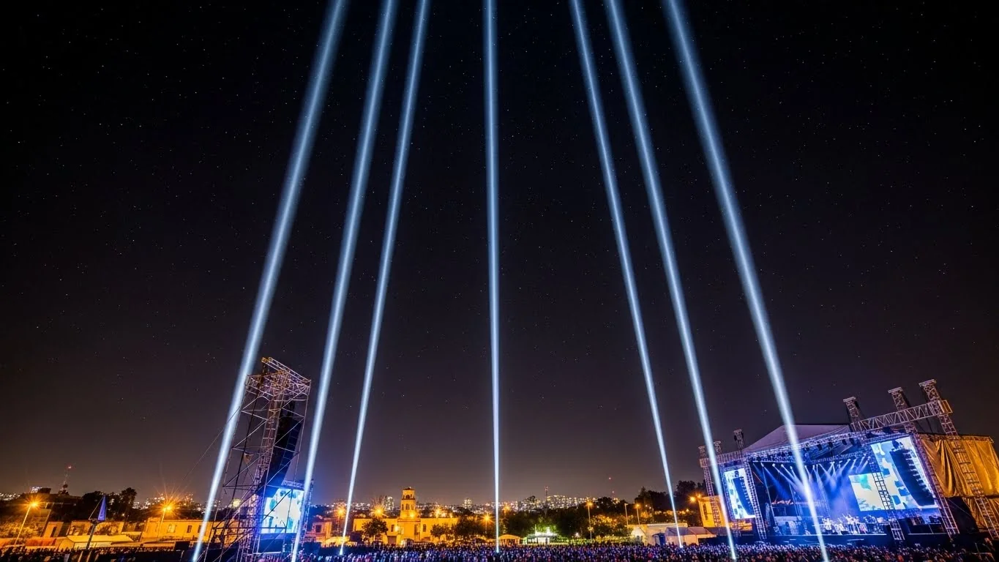

Mas Popular
Sky Tracker 2000W Single Beam
"El clásico que nunca falla"
Nuestro Sky Tracker más solicitado con lampara xenon de 2000W que produce un haz concentrado visible a 2-3 km de distancia. Ideal para XV anos, bodas y eventos donde quieres un efecto impactante sin exagerar. Temperatura de color 5600K (luz dia), movimiento motorizado automático en patrón ovalado y control DMX512. Carcasa de aluminio resistente a la intemperie.
2000W Xenon
2-3 km Alcance